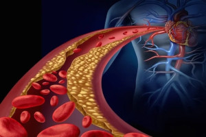

Sobre o LDL
O colesterol LDL, conhecido como "colesterol ruim", pode acumular-se nas artérias, aumentando o risco de doenças cardiovasculares como ataques cardíacos e derrames. Controlar os níveis de LDL é essencial para prevenir esses problemas de saúde.
Alguns dos Problemas do Colesterol LDL Elevado
Aterosclerose: A principal preocupação com níveis elevados de LDL é a aterosclerose, uma condição em que placas de gordura se acumulam nas paredes das artérias, causando estreitamento e rigidez. Isso pode levar a uma redução do fluxo sanguíneo para órgãos vitais, incluindo o coração e o cérebro.

Acidente Vascular Cerebral (AVC): Placas de colesterol podem se romper e formar coágulos sanguíneos que podem bloquear o fluxo de sangue para o cérebro, resultando em um AVC.
Doença Arterial Periférica: LDL alto pode afetar as artérias das pernas e braços, levando a dor, problemas de circulação e, em casos graves, à necessidade de amputação.